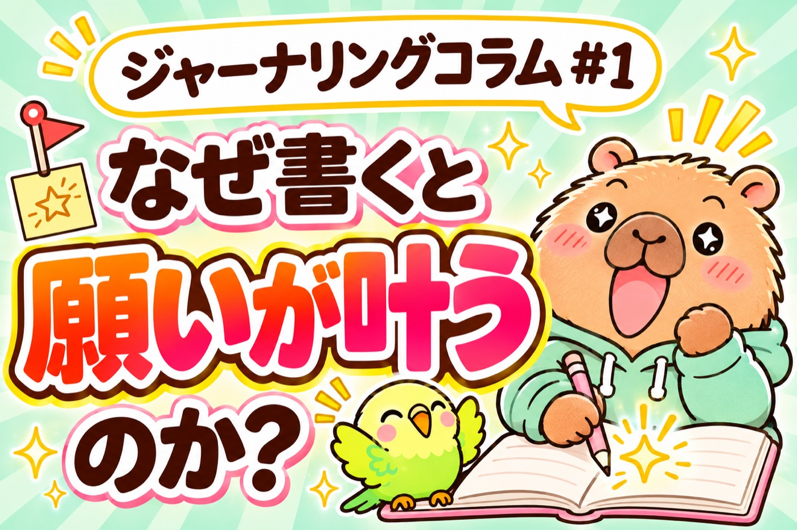

おけもんの
ジャーナリングコラム🦫
書くたびに自分のことが分かって、強みが見えて、最高の未来が叶っていく。
ジャーナリング × ストレングスファインダーの、毎日3分のコラムです。
これまで 4 本最新 2026.11.24
いちばん新しいコラム

決めれば、叶う。
うまくいっている人は、まず決めている。いきなり大きくなくていい、今日のごはんから。🎧音声つき
書いた目標は、変わっても大丈夫
中身は明日のお楽しみ。
これまでのコラム

「書いたら引き寄せるってほんとだなぁ」と思った日
AIと散歩しながら喋ったら、次の日に本当に会えた。書いて終わりじゃなく、ピンが立つと自然と動き出す。🎧音声つき

書くと、「なぜそこへ向かいたいのか」が見えてくる
強みを活かしている人は、自分を言葉にするのが上手。うまく書かずに、「なんでやろ？」をもう一歩だけ。🎧音声つき

なぜ書くと願いが叶うの？ 脳の「カーナビ」に目的地を入れよう
人は決めたことを忘れる生き物。書くのは、カーナビの目的地を毎日入れ直すため。
書いた人：おけもん🦫（ストレングスファインダー認定コーチ）